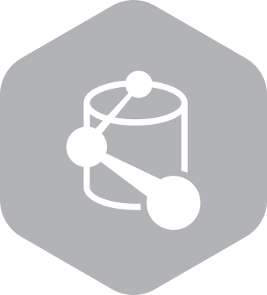

개요
Dynatrace는 AI 기반 소프트웨어 Intelligence Platform으로 마이크로서비스에서 메인 프레임까지 최신 하이브리드 클라우드 전 구간(End-to-end)를 모니터링합니다.
자동 풀 스택 계측으로 모든 트랜잭션에 대해 정확성과 상호 의존성을 파악하며 클라우드 인프라 모니터링 및 AIOps가 포함되어 전체 스택에서
즉각적인 근본 원인을 코드 레벨까지 파악할 수 있습니다.
Dynatrace AI기반 Observability 자동화 Platform
Dynatrace 특장점
Dynatrace가 제공하는 자동화 기능을 통해 갈수록 복잡해지는 시스템 환경에 대한 성능 관리를 효율적으로 수행하고, 고객은 혁신에 더욱 집중할 수 있습니다.
Dynatrace를 차별화 시키는 단일 플랫폼 주요기술
OneAgent
- 배포/설치/Update 자동화
- Fully automated & Full Stack 모니터링
Smartscape
- 시스템의 맥락을 파악하고 자동으로 실시간 토폴로지 매핑
AI-Assistant
- AIOps 기반으로 설명 형식의 자동 문제 원인 분석 보고서 제공
Hyperscale
- 수만 개 호스트, 수백만 개 엔티티, 최대 규모의 멀티 클라우드 확장

Grail
- 무제한 확장이 가능한 AI를 위한 Graph Powered Database